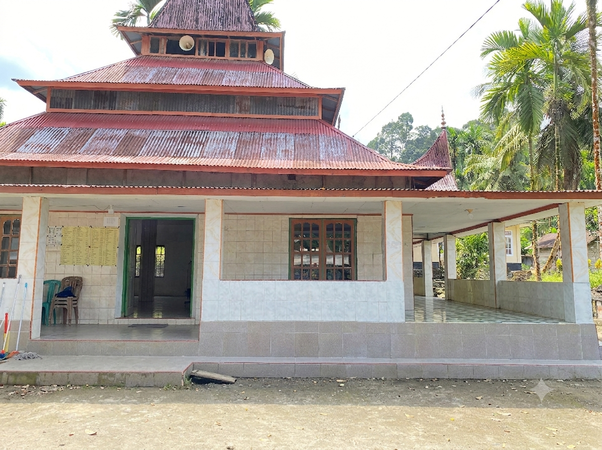

Dokumentasi
Galeri Foto
Momen-momen berharga kegiatan Masjid Raya Talago
Pusat ibadah, pendidikan, dan kegiatan sosial masyarakat Jorong Talago. Berdiri kokoh sebagai simbol keimanan dan persatuan umat.

Tentang Kami
Masjid Raya Talago adalah masjid kebanggaan masyarakat Jorong Talago yang berdiri sejak tahun 1967. Sebagai pusat kegiatan keagamaan, sosial, dan pendidikan, masjid ini terus berkembang melayani ribuan jamaah dan menjadi simbol persatuan umat Islam di Kabupaten Agam malalak selatan.
Waktu Ibadah
Jadwal berdasarkan lokasi Jorong Talago, Kab. Agam Malalak selatan
Program Rutin
Berbagai program keagamaan, pendidikan, dan sosial untuk mempererat ukhuwah islamiyah.
Kajian Al-Qur'an dan hadis bersama ustaz terpilih. Terbuka untuk seluruh jamaah pria dan wanita.
Senin-Selasa-Jumat-Sabtu, 19:00 WIBTaman Pendidikan Al-Qur'an untuk anak-anak usia 5–15 tahun. Belajar iqra', tahsin, dan hafalan.
Senin–Sabtu, 15:30 WIBPelaksanaan sholat Jumat dengan khotib bergantian dari ulama lokal dan tamu.
Setiap Jumat, 12:00 WIBKegiatan pembinaan keislaman bagi anak-anak dan remaja melalui hafalan surat pendek, doa sehari-hari, kultum, serta praktik ibadah.
Setiap Minggu, 05:30 WIBlomba adzan, dan Surat" pendek untuk anak anak Tpa/Tpq .
TahunanPendataan Penduduk Jorong Talago Nagari Malalak Selatan.
15-30 JuniDokumentasi
Momen-momen berharga kegiatan Masjid Raya Talago
Ikuti Kami
Dapatkan informasi terbaru, jadwal kegiatan, dan konten islami melalui platform digital kami.
Hubungi Kami
Jorong talago,Malalak Selatan., Kecamatan. Malalak, Kabupaten Agam, Sumatera Barat 26161
+62 83820009461
(Sekretariat)
mrayatalago@gmail.com
Setiap hari mengikuti waktu sholat 5 waktu
Jorong Talago, Kab. Agam
Buka di Google Maps